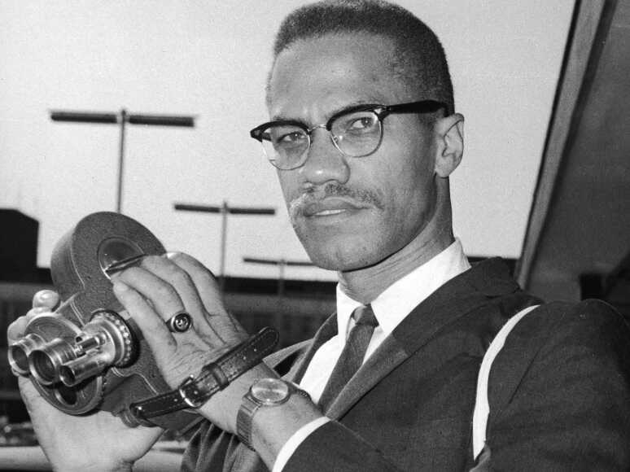

Malcolm X

Malcolm liked cameras and brought one to a civil rights demonstration and he says “If there were no captions for these pictures, you’d think this was Mississippi or Nazi Germany”.
Here is the life of Malcolm X:
- 1925 On May 19 Malcolm Little was born in Omaha, Nebraska becoming the 4th child of Earl and Luise Little
- 1928 Their family moved to Lansing, Michigan into a white neighborhood. Later that year thier house was burned to the ground by a white supremacist group and then they moved again to East Lansing
- 1931 Earl Little is killed by the KKK and the Little family struggle to make ends meet. Louise Little even resorted to cooking dandelions to feed her kids.
- 1939 Louise Little was submitted to a mental hospital and Malcolm and his siblings were sent to foster homes or other family members. Malcolm did well in school but in 8th grade, he told his teacher that he wanted to become a lawyer but the teacher told him that the idea wasn't realistic and that he should consider being a carpenter instead. This causes him to give up on school.
- 1941 Malcolm moves in with his half-sister Ella Collins in Boston and takes on many jobs over the next few years.
- 1946 Malcolm fell into crime including hustling, gang activity, and drug dealing but in 1946 he was caught pawning a watch that had stoll and was sentenced to 8-10 years in prison.
- 1948 Malcolm is conviced by inmates to start reading and increase his knowledge. His siblings introduce him to the words of Islam and he even starts getting in contact with the Nation of Islam's leader, Elijah Muhammad and he ends up converting to the Islam faith. While in prison Malcolm develops this ideal that all white people are evil and that they are devils. He believed that blacks and whites could never coexist.
- 1952 He is released on parole and moves to Detroit where he joined the Nation of Islam and denounces his surname "Little" calling it a slave name and changes it to X. He notices that there are only 400 members in the Nation of Islam so he starts huge recruting campain casuing the amount of members to soar. The very next year he became a minister of Temple No. 11 in Boston.
- 1954 He Is appointed to minister of Temple No. 7(the largest temple after headquarters) in Harlem. Elijah Muhammad eventually made Malcolm second in command to him.
- 1959 Malcolm travels to Ghana, Sudan, Nigeria, Iran, Syria, Egypt, and the United Arab Republic. He even spoke to the President of Egypt.
- 1961 Elija Muhammad had moved to Phoenix for health reasons and he makes Malcolm the national representative of the Nation of Islam. Malcolm spoke on many college campuses, televisons, and radio stations.
- 1963 Over the years Malcolm spoke about Kennedy's death and Muhammad's infidelity.
- 1964 Malcolm is suspended from the Nation of Islam and has to give up all of their property, including their house. Later this year he gave his Ballot or the Bullet speach then left to visit Egypt, Lebanon, Liberia, Senegal, Nigeria, Ghana, and Saudi Arabia, he makes a pilgramage to Mecca were he is given a new name, El-Hajj Malik El-Shabazz. Here his view on race changed, he wrote that "pilgrims of all colors from all parts of this earth displaying a spirit of unity and brotherhood like I've never seen before." He belives that white americans can stop being racist if they study Islam. Malcolm also forms the Organization of Afro-American Unity (OAAU), reflecting a growing political agenda.
- 1965 Malcolm speakes in Selma, Alabama, at the invitation of Student Non-Violent Coordinating Committee. Malcolm's home in East Elmhurst is firebombed Malcolm X says that it is "upon the orders of Elijah Muhammad." and a week later he was assasinated while speaking at an OAAU rally in Harlem.
Malcolm was a Civil leader, his teachings were slighlty different than Martin Luther King Jr. He believed that his followers should defend themselves "by any means necessary". He preached this message along with ideas of black power and Islam to people all across america and the world. He helped change the terms froms "negro" and "coloured" to "Afro-American" and "Black".